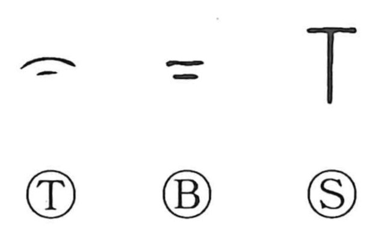

下

Kun: shita, shimo, moto, sageru, sagaru, kudaru, kudasu, kudasaru, orosu, oriru | On: ka, ge
under ・ below ・ lower ・ to descend ・ to lower ・ inferior ・ later
Explanation
下 shows a palm turned downward, with a mark beneath it indicating the space under the hand. The hand establishes a reference level; the added mark identifies the lower side. 上 uses the corresponding arrangement for what is above.
From ‘below’ come ‘low’ and the movements of going down, lowering, or bringing something down. The same relation extends to rank, where someone or something is placed beneath another, and to sequence, where 下 can indicate what comes later or toward the end. The simple spatial relation remains the centre of these uses.